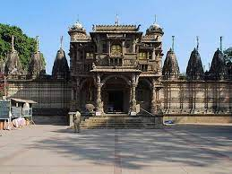

About
Ahmedabad
Ahmedabad also known as Karnavati, is the most populous city in the Indian state of Gujarat. It has emerged as an important economic and industrial hub in India. It is the second-largest producer of cotton in India, due to which it was known as the 'Manchester of India' along with Kanpur. In July 2017, the Historic City of Ahmedabad or Old Ahmedabad, was declared as India's first UNESCO World Heritage City
Jama Masjid lies in the old walled city, the mosque is situated outside Bhadra Fort area, along the south side of the road extending from Teen Darwaza to Manek Chowk.
The Calico Museum of Textiles is located in the city of Ahmedabad in the state of Gujarat in western India. The museum is managed by the Sarabhai Foundation.
Adalaj Stepwell is a stepwell located in the village of Adalaj, close to Ahmedabad city and considered a fine example of Indian architecture work. It was built in 1498 in the memory of Rana Veer Singh.

The Sidi Saiyyed Mosque, popularly known as Sidi Saiyyid ni Jali locally, built in 1572-73 AD , is one of the most famous mosques of Ahmedabad
Teen Darwaza is a historical gateway on the east of Bhadra Fort, Ahmedabad. Completed in 1415, it is associated with historical as well as legendary events. The gates are featured in the logo of Ahmedabad Municipal Corporation.

Hutheesing Temple (હઠીસિંહનાં દેરાસર) is the best known Jain temple in Ahmedabad in Gujarat, India. It was constructed in 1848